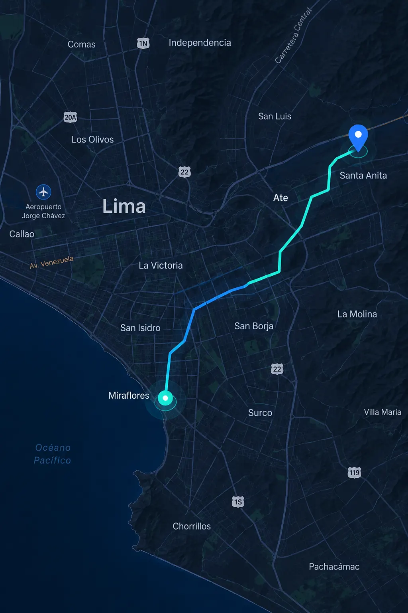
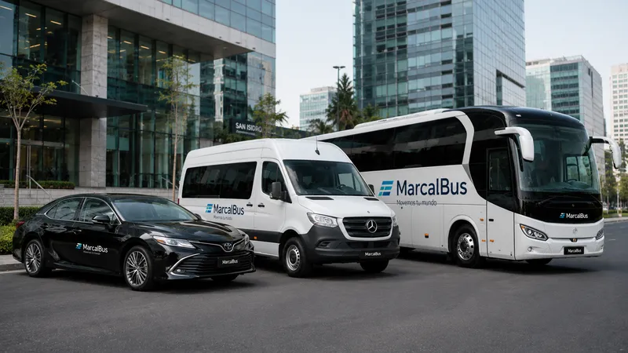
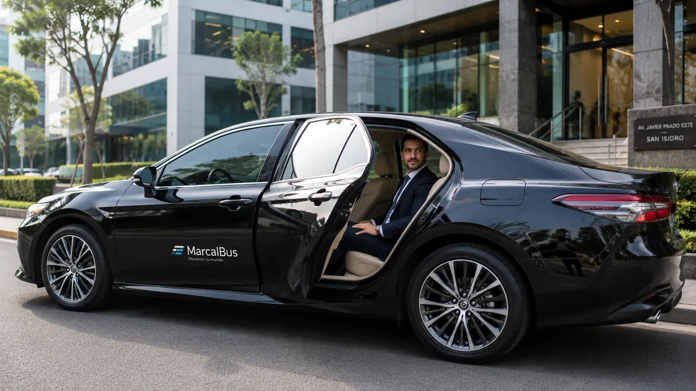

✓
Puntualidad medible
Las rutas se planifican con horarios, puntos de recojo y responsables definidos. La coordinación anticipada permite detectar desvíos y actuar antes de que un retraso afecte el inicio de turno.
Diseñamos y operamos rutas de transporte de personal para empresas medianas y grandes. Flota moderna, conductores profesionales, GPS en tiempo real y coordinación 24/7 para que cada equipo llegue seguro y a tiempo.

Cuando una empresa crece, coordinar el traslado de colaboradores deja de ser una tarea puntual y se convierte en una responsabilidad diaria. Los horarios de ingreso, los turnos rotativos, las sedes alejadas y los cambios de última hora necesitan un proveedor que entienda el impacto de cada recorrido. MarcalBus brinda transporte de personal para empresas con una operación estructurada, comunicación directa y foco en la continuidad del servicio.
Nuestro trabajo comienza antes de asignar una unidad. Revisamos los puntos de recojo, la demanda por horario, la duración de los trayectos y las condiciones de cada sede. Con esa información proponemos rutas realistas, tiempos de salida y una configuración de flota que cuide la experiencia del colaborador sin perder eficiencia. El resultado es un servicio de movilidad corporativa que se integra a tus procesos de Recursos Humanos, Administración, Seguridad y Operaciones.
Atendemos Lima Metropolitana y proyectos en todo el Perú. Nuestra propuesta no busca ser la alternativa más barata del mercado: está pensada para organizaciones que valoran la puntualidad, la seguridad, la trazabilidad, la presentación de sus conductores y la capacidad de responder cuando el contexto cambia.
Un programa de transporte empresarial bien coordinado reduce fricción, mejora la experiencia del equipo y ayuda a que la empresa cumpla su agenda.
Las rutas se planifican con horarios, puntos de recojo y responsables definidos. La coordinación anticipada permite detectar desvíos y actuar antes de que un retraso afecte el inicio de turno.
Trabajamos con conductores profesionales y unidades adecuadas para el tipo de recorrido. La empresa cuenta con un canal de atención y un equipo que conoce la operación.
El seguimiento GPS y los reportes operativos ayudan a Administración y Recursos Humanos a tomar decisiones con información, no con suposiciones.
Aire acondicionado, asientos reclinables y un servicio ordenado convierten el traslado en una extensión coherente de la experiencia laboral.
Podemos ajustar frecuencias, recorridos y capacidades cuando cambia la cantidad de pasajeros, se abre una sede o comienza un nuevo proyecto.
Integra transporte de personal, minibuses, taxi ejecutivo y turismo empresarial mediante una coordinación comercial centralizada.
Una empresa de transporte de personal debe adaptarse a la operación del cliente, no obligarlo a encajar en una ruta genérica. Por eso iniciamos con una conversación comercial y un diagnóstico de movilidad. Queremos saber cuántas personas viajan, desde dónde se movilizan, qué turnos manejas y cuáles son los puntos críticos del servicio.
Luego ordenamos la información en una propuesta: rutas sugeridas, ventanas de recojo, capacidades, unidades de respaldo, canal de coordinación y alcance del seguimiento. Explicamos los supuestos para que el área responsable pueda evaluar con claridad la solución y el presupuesto.
Al iniciar, asignamos responsables y dejamos definidos los protocolos de comunicación. Si aparece una incidencia, el cliente sabe a quién escribir y qué información recibirá. Esta disciplina es especialmente importante para operaciones industriales, constructoras, clínicas, colegios y compañías con personal que trabaja fuera del horario convencional.
Cotizar transporte empresarial

El GPS en tiempo real permite conocer la ubicación de las unidades y observar el avance de las rutas. Para el cliente, esto significa mayor tranquilidad y una respuesta más rápida ante tráfico, desvíos o cambios de horario. La información se utiliza para coordinar, no para complicar la experiencia del usuario.
También aplicamos herramientas de inteligencia artificial a la operación para identificar patrones, ordenar información y apoyar la planificación. La IA no reemplaza el criterio del equipo operativo: lo complementa para analizar recorridos, anticipar necesidades y encontrar oportunidades de mejora.
El seguimiento se adapta al acuerdo de cada empresa. Podemos establecer reportes, alertas, confirmaciones de llegada y un canal de atención que entregue información útil a las personas autorizadas. Así, la tecnología se convierte en una herramienta práctica para Seguridad, Operaciones y Recursos Humanos.
Contamos con una flota moderna y unidades propias complementadas por una red de socios homologados. Las unidades tienen menos de cinco años, aire acondicionado y asientos reclinables, de acuerdo con la configuración contratada. Evaluamos el vehículo correcto según el tamaño del grupo, el tipo de ruta, la frecuencia y las condiciones del servicio.
Para una ruta diaria de personal, la continuidad es tan importante como la comodidad. Por eso la planificación considera disponibilidad, mantenimiento y alternativas operativas. Para un traslado ejecutivo corporativo, priorizamos una experiencia reservada y una presentación coherente con la imagen de la compañía. Para un grupo de proyecto, podemos trabajar con minibuses y buses según la demanda.
Los conductores profesionales son una parte central de la propuesta. Buscamos personas responsables, orientadas al servicio y conscientes de que transportan equipos de trabajo. La comunicación respetuosa, el cumplimiento de protocolos y el cuidado de la unidad importan tanto como conocer la ruta.

La calidad de un servicio de transporte empresarial se decide mucho antes de que el vehículo salga. Una ruta aparentemente corta puede tener múltiples puntos de recojo, ventanas de acceso, restricciones de circulación y variaciones importantes de tráfico. Por eso analizamos el recorrido completo y no solo la distancia entre origen y destino.
En el diagnóstico consideramos la distribución de los colaboradores, los puntos de encuentro más seguros, el tiempo de espera razonable y la relación entre número de pasajeros y capacidad de la unidad. También revisamos el sentido de los turnos: el ingreso de la mañana puede necesitar una lógica distinta a la salida nocturna. La propuesta final busca equilibrar tiempo de viaje, comodidad, puntualidad y eficiencia operativa.
Cuando una empresa tiene varias sedes, podemos ordenar la operación por zonas y horarios. Esto facilita los cambios de personal, reduce cruces innecesarios y hace más clara la comunicación con quienes administran el servicio. Si una ruta debe modificarse, el equipo cuenta con una base de información para evaluar el impacto antes de aplicarla.
La planificación también contempla los períodos de mayor demanda en Lima. No prometemos tiempos imposibles; construimos ventanas de recojo realistas y trabajamos con el cliente para definir qué significa llegar a tiempo en cada operación. Esta forma de trabajar protege la experiencia del colaborador y evita que el servicio dependa de decisiones improvisadas.
El transporte de personal suele involucrar a varias áreas. Recursos Humanos conoce las necesidades del colaborador; Administración revisa presupuesto, contratos y facturación; Operaciones necesita asegurar los turnos; Seguridad requiere visibilidad sobre los recorridos. Un proveedor especializado debe ser capaz de conversar con todas esas perspectivas sin perder el objetivo común: que la movilidad funcione.
Por eso documentamos los aspectos importantes del servicio. Definimos los canales de comunicación, los contactos autorizados, la frecuencia de reportes y el protocolo para cambios. Cuando el cliente nos informa que hay una capacitación, una nueva sede o una variación de turno, podemos revisar la operación con contexto y no desde cero.
La atención no termina con la cotización. Acompañamos el inicio, recogemos observaciones y buscamos oportunidades de mejora. Una incidencia bien gestionada no debe convertirse en una cadena de mensajes sin respuesta. El valor de un proveedor B2B está en hacerse cargo, comunicar con claridad y cerrar cada pendiente.
Este enfoque es especialmente útil para empresas medianas y grandes que necesitan una relación estable. En lugar de administrar varios proveedores informales, el cliente cuenta con una operación coordinada y una referencia comercial única. Así puede concentrarse en su negocio mientras nosotros cuidamos una parte crítica de la experiencia diaria del equipo.
Las empresas no operan siempre igual. Una campaña puede aumentar la cantidad de pasajeros; una obra puede mover su punto de acceso; una clínica puede incorporar un turno; una reunión corporativa puede requerir un traslado puntual. Nuestro servicio de transporte de personal se plantea con flexibilidad para que esos cambios puedan evaluarse de manera ordenada.
Disponemos de unidades propias y una red de socios homologados que amplía la capacidad disponible sin perder el estándar de coordinación. La homologación permite revisar condiciones, documentación y calidad antes de integrar una unidad a un servicio. No se trata de sumar vehículos indiscriminadamente, sino de contar con alternativas confiables cuando la operación lo necesita.
La operación 24/7 es importante para compañías con turnos nocturnos, ingresos de madrugada o servicios nacionales. La atención comercial funciona de lunes a sábado de 07:00 a 19:00, mientras que la coordinación operativa se organiza de acuerdo con el servicio contratado. De esta manera, la empresa sabe cuándo puede solicitar una propuesta y cómo se atenderá la ruta una vez iniciada.
Si tu empresa ya tiene transporte y está evaluando una mejora, podemos revisar los indicadores que más importan: puntualidad, cumplimiento de ruta, comunicación, experiencia del usuario, capacidad de respuesta y costo total de la operación. La conversación no tiene que empezar con una decisión de cambio; puede comenzar con una evaluación profesional de lo que hoy funciona y de lo que conviene corregir.
Coordinamos rutas urbanas, interurbanas y servicios especiales para distintos tipos de empresa.
Turnos rotativos, plantas alejadas y traslados de madrugada requieren rutas confiables y seguimiento permanente.
Movilizamos equipos hacia obras, campamentos y puntos de reunión con una planificación que puede cambiar por etapa.
Apoyamos horarios exigentes y servicios que no pueden depender de la disponibilidad informal del transporte.
Diseñamos rutas de ingreso y salida para equipos que trabajan en sedes, hubs empresariales y zonas de conexión.
Coordinamos recojos, retornos y ventanas de llegada para reuniones, integraciones y actividades corporativas.
Evaluamos cobertura nacional para proyectos y traslados que necesitan continuidad logística en todo el Perú.
En MarcalBus entendemos que contratar transporte empresarial es una decisión operativa y reputacional. Una unidad que no llega, un cambio que nadie comunica o una ruta mal dimensionada impactan en la productividad y en la percepción que el equipo tiene de su empleador. Por eso nuestra prioridad es construir un servicio estable, con responsables identificables y una relación comercial de largo plazo.
Más de 10 años de experiencia nos han enseñado que cada cliente necesita una solución distinta. Algunas empresas requieren una ruta fija durante todo el año; otras necesitan cubrir una obra por meses. Algunas tienen ingresos a las ocho de la mañana; otras trabajan con turnos nocturnos y ventanas variables. El valor está en escuchar, ordenar la información y convertirla en una operación que pueda medirse y mejorar.
La atención comercial está disponible de lunes a sábado, de 07:00 a 19:00. La operación de los servicios se mantiene 24/7 según el alcance contratado. Si estás evaluando un nuevo proveedor, podemos revisar tu situación actual, identificar puntos de mejora y preparar una propuesta sin comprometerte a una solución prefabricada.
Un buen servicio no se mide únicamente por el vehículo que aparece en el punto de recojo. Se mide por la consistencia de la operación a lo largo del tiempo: que la información llegue a las personas correctas, que los cambios se comuniquen con anticipación y que las observaciones se conviertan en mejoras concretas. Esa es la clase de relación que buscamos construir con cada cliente corporativo.
MarcalBus combina experiencia, tecnología y criterio humano para resolver una necesidad muy concreta: trasladar personas de forma segura, puntual y profesional. Si tu empresa necesita una solución de transporte de personal en Lima que acompañe su crecimiento, conversemos sobre la operación que quieres construir.
El objetivo es que tu equipo pueda concentrarse en su trabajo y que tu área administrativa tenga un proveedor serio, disponible y capaz de explicar qué ocurre en cada etapa del servicio. Esa confianza se construye con procesos sencillos, seguimiento constante y una mejora continua basada en la experiencia real de los pasajeros.
La coordinación cercana permite anticipar necesidades y sostener una experiencia consistente para cada colaborador, sede y turno.
Incluye el diagnóstico de rutas, programación, asignación de unidades y conductores, coordinación operativa, GPS en tiempo real y seguimiento para los responsables del cliente.
Sí. Atendemos organizaciones que necesitan rutas fijas, turnos rotativos, servicios por proyecto, minibuses, buses o soluciones combinadas.
Sí. Las unidades cuentan con GPS y definimos con cada cliente el nivel de seguimiento, reportes y alertas que requiere su operación.
Cubrimos Lima Metropolitana y evaluamos rutas hacia otras ciudades y todo el Perú según el proyecto, la frecuencia y el tipo de unidad.
La flota moderna cuenta con aire acondicionado y asientos reclinables, considerando la disponibilidad y configuración de la unidad seleccionada.
Sí. La operación es 24/7 y podemos coordinar ingresos tempranos, turnos nocturnos, salidas escalonadas y servicios especiales.
Completa el formulario o escríbenos por WhatsApp. Indica rutas, horarios, cantidad de pasajeros, frecuencia y fecha estimada de inicio.
Porque una operación corporativa requiere continuidad, trazabilidad, conductores profesionales, protocolos de atención y una respuesta clara cuando surge una incidencia.
Cuéntanos tus rutas, horarios y cantidad de pasajeros. Prepararemos una propuesta de transporte de personal para tu operación en Lima.
Hablar por WhatsApp